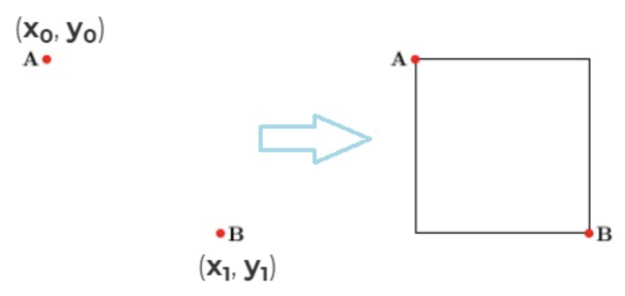
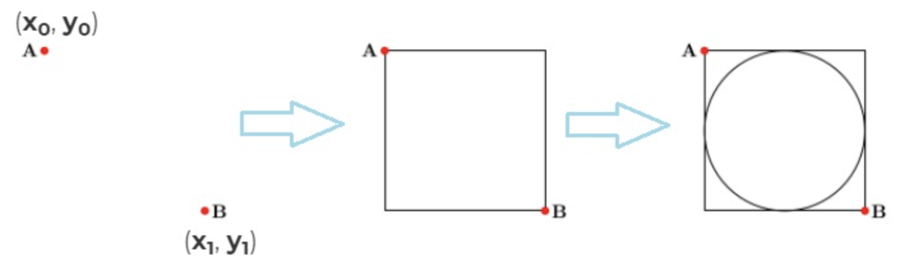
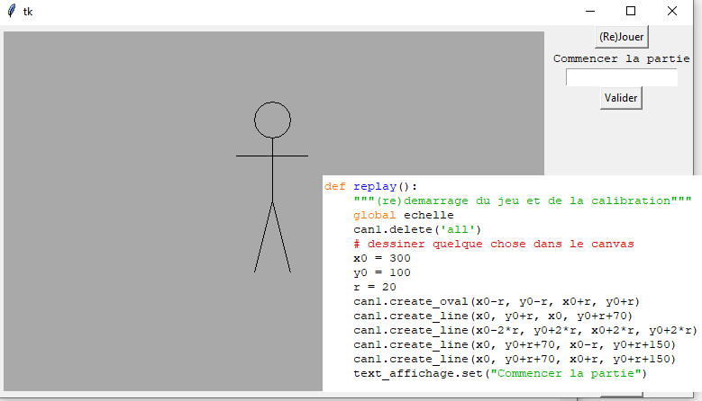

Tkinter les bases
Tkinter les bases
- télécharger le dossier zip: tuto_tkinter.zip * le placer dans vos Documents
- Extraire tout
- Ouvrir le fichier main.py avec un IDE Python de la suite Winpython
Import des modules
Le module tkinter apporte l’environnement graphique.
Le module PIL permet la gestion des images.
Démarrer votre fichier par:
Créer une fenêtre Tkinter
La fenêtre est un objet de la classe Tk. Pour l’exemple qui suit, on lui donne le nom de fen1.
On créé un objet fenêtre à partir de l’instruction: fen1 = Tk()
La dernière ligne permet d’afficher la fenêtre à l’écran. Il faudra auparavent ajouter les objets esclaves.
Objets esclaves
Ces objets sont à ajouter à fen1, une fois celle-ci créé. Donc après fen1 = Tk()
Canvas
C’est la partie de la fenêtre dans laquelle on dessine.
On commence par créer un objet canvas appelé ici can1: c’est l’instruction can1 = Canvas(fen1, ...arguments...). Les arguments vont permettre de choisir par exemple la largeur en pixel du canvas (width) et sa hauteur (height).
Puis on positionne can1 avec la méthode pack. Sans cette deuxième ligne can1.pack(side=LEFT, padx=5, pady=5), l’objet esclave est créé mais non attaché à la fenêtre (et donc n’apparait pas).
des boutons
Les boutons vont permettre d’appeler des fonctions lorsque l’on clique dessus.
Par exemple, le bouton 1, bou1 va appeler une fonction de fen1 héritée lors de sa création à partir de la classe Tk. C’est la fonction quit.
Et le bouton 1, bou2, va appeler la fonction replay qu’il vous faudra programmer. Que voudrez vous qu’il se passe lorsque l’on clique sur ce bouton…? Effacer le canvas, dessiner une grille,…?
Remarques: en python, il est possible de mettre en argument d’une fonction une autre fonction. C’est ce qui est réalisé ici, avec les fonctions fen1.quit et replay. On appelle ces fonctions sans mettre de parenthèses: on écrit replay et non replay().
Etiquette: Label
On peut écrire un texte dont le contenu sera evolutif, comme un panneau d’affichage dont le contenu est variable:
Plus tard, dans le programme, il suffira d’écrire text_affichage.set("nouveau \n message") pour afficher un nouveau message, à la même place.
textBox
Equivalent de input mais pour l’environnement tkinter. Il faudra definir le champs de saisie (objet Text), et le bouton pour validation:
Il faudra alors programmer la fonction de rappel readtext:
Image dans le canvas
Plusieurs étapes sont necessaires pour:
- ouvrir une image du dossier
- redimensionner l’image
- créer un objet image à partir du module tkinter:
image_bomb - dessiner l’image dans le canvas à la position 100 * 100
Plus loin dans le programme, il suffira d’écrire bomb = can1.create_image(200, 200, anchor="nw", image=image_bomb) pour dessiner l’image à la position 200 * 200 par exemple.
Dessiner dans le canvas
Dessiner un carré
On utilise la méthode: .create_rectangle(X0, Y0, X1, Y1)
X, Y sont les coordonnées du coin supérieur gauche du carré.
Il peut y avoir des paramètres optionnels.

Dessiner un cercle:
On utilise la méthode: .create_oval(x-r, y-r, x+r, y+r)
.create_line(x0, y0, x1, y1)

Exemple: le jeu du pendu
Evenements
Gestion d’un clic de souris dans le canvas
Pour ajouter un écouteur de clic dans le canvas, il faut ajouter dans le bloc principal (après avoir créé l’objet fen1 et can1:
Ici, la fonction qui sera appelée lorsque l’on clique avec le bouton gauche de la souris dans le canvas est la fonctionclic qu’il faudra programmer.
Lors de l’appel de cette fonction, il ne faut pas ajouter d’agument ni de parenthèses.
On peut par exemple vouloir afficher les coordonnées de la souris lors du clic:
Remarque: la fonction de rappel clic a un paramètre obligatoire, event lors de sa création.
Cliquer sur une image
Pour ajouter un ecouteur de clic sur une image, on procède d’une manière presque identique:
Après avoir placé l’image dans le canvas, on lui associe une fonction de rappel:
Ici, la fonction de rappel sera play_pierre. Le clic sur cette image pourra peut-être afficher un message:
Gestion des touches du clavier
De nombreux jeux utilisent les touches du clavier pour commandes. L’écoute du clavier se fait avec fen1.bind("<Key>", nom_de_la_fonction_de_rappel):
On peut alors programmer une fonction de rappel clavier qui affiche le caractère appuyé:
Exemples
Exemple 1: dessiner une grille
Souvent, le jeu utilise un quadrillage sur tout le canvas.
On peut programmer une fonction carre qui dessine un carré de côté r, puis appeler cette fonction lors du dessin initial, dans une autre fonction.
La fonction qui dessine le fond quadrillé utilisera 2 boucles bornées imbriquées. Si chaque carré a pour côté H: L’idée est d’utiliser les dimensions du canvas pour avoir un nombre entier de carrés de côtés H:
famille de jeux: le morpion, puissance 4, echecs, demineur
Exemple 2: dessiner selon le texte saisi
On pourrait dessiner avec un ordre: la fonction de rappel readtext pourrait évaluer les caractères saisis, et, s’il s’agit de:
tete: dessiner la tête du personnagecorps: dessiner le corpsbras: dessiner ses brasjambes: dessiner ses jambes
famille de jeux: jeu de devinette, jeu de rôle, jeu du pendu
Exemple 3: ajouter une image lors d’un clic
Avec la fonction clic, on peut créer une nouvelle image dans le canvas avec:
Le mieux, serait d’aligner l’image sur la grille de fond lorsque l’on clique dans l’une des cases du quadrillage.
Si les carrés ont pour côté H: Il faudra que X et Y soient multiples de H.
Utiliser la division entière:
X = (X // H) * H
et Y = (Y // H) * H
famille de jeux: demineur, puissance 4, morpion